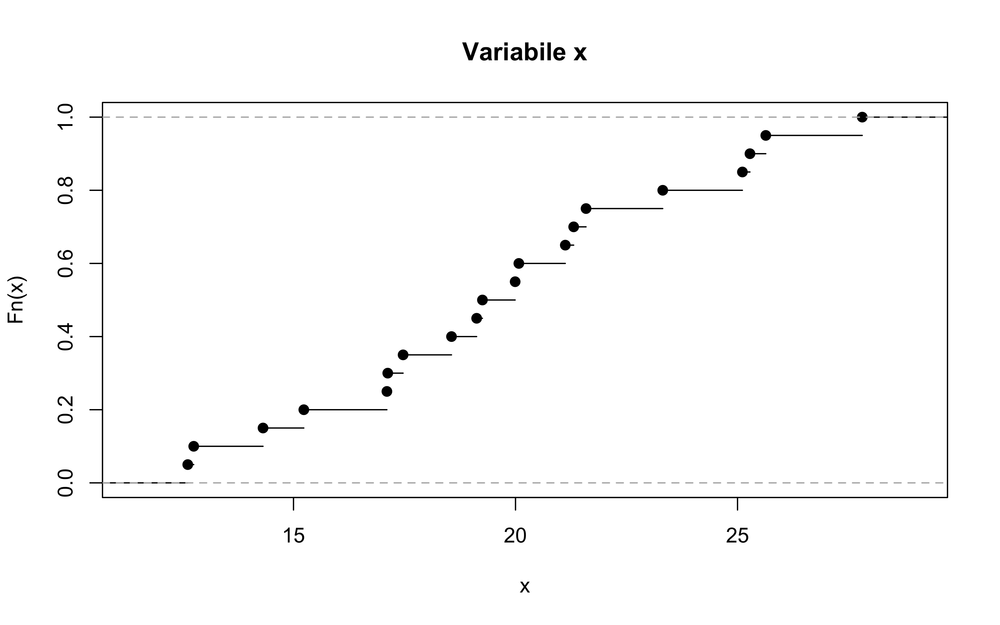

Statistica I
Esercizi 2: indici di posizione
Homepage
Esercizio A
Per le osservazioni x_1,\dots,x_{11}, i cui valori sono (−4, 5, 3, 1, −1, 3, −1, 1, 0, 3, 2), si calcolino media e mediana.
Inoltre, si dica quali sono mediana e media delle osservazioni trasformate y_1,\dots,y_{11} che si ottengono trasformando i dati di partenza secondo le funzioni
y_i = f_1(x_i)=e^{x_i}, \quad i=1,\dots,11. y_i = f_2(x_i) = x_i + 4, \qquad i=1,\dots,11.
y_i = f_3(x_i) = -3 x_i + 1,\qquad i=1,\dots,11. y_i = f_4(x_i) = x_i^2, \qquad i =1,\dots,11.
Esercizio B
Di un gruppo di n = 100 ragazzi appartenenti ad una società sportiva si hanno le seguenti informazioni sull’età (in anni compiuti) e sulla statura (in cm). Sapendo che la media della statura relativa ai 100 ragazzi è di 178 cm, si determini:
La media della statura per i n_2 = 40 ragazzi di 17 anni.
La media dell’età.
È inoltre noto che:
| Età | Numerosità (n_j) | Media statura |
|---|---|---|
| 16 | 40 | 175 |
| 17 | 40 | (ignota) |
| 18 | 20 | 180 |
Esercizio C
Una ditta di trasporti rifornisce con uguale periodicità cinque negozi posti rispettivamente ai chilometri 50, 89, 134, 198, 530 di una stessa strada. Avendo deciso di costruire un magazzino sulla strada medesima, la ditta vuole stabilirne la posizione (ovvero il chilometro della strada) in modo da minimizzare la distanza percorsa per rifornire i cinque negozi.
Esercizio D
Il controllo sul peso (in grammi) di n = 71 pacchetti di burro ha fornito la seguente distribuzione di frequenza cumulata.
| Peso c_j | (0,250] | (250, 251] | (251, 252] | (252, 253] | (253, 254] | (254 , 255] |
|---|---|---|---|---|---|---|
| Frequenza cumulata | 0 | 15 | 42 | 60 | 70 | 71 |
Effettuando, se necessarie, le dovute approssimazioni:
Si calcolino media e mediana del peso dei pacchetti di burro.
Si calcoli il primo ed il terzo quartile.
Esercizio E
È data la seguente distribuzione di mortalità, in un dato anno e luogo, divisa per classi d’età.
| Età | (0,1] | (1,5] | (5, 25] | (25, 45] | (45, 65] | (65, 75] | (75, 100] |
|---|---|---|---|---|---|---|---|
| Numero di morti | 203 | 750 | 4281 | 5074 | 6184 | 1983 | 799 |
Si noti che n = 19274. Effettuando, se necessarie, le dovute approssimazioni:
Si calcolino media e mediana dell’età.
Si calcoli il primo ed il terzo quartile.
Esercizio F
Ai dipendenti di un’azienda è stato chiesto di indicare il grado di soddisfazione (1 = scarsa; 10 = ottima) riguardo alla qualità del cibo distribuito dalla mensa aziendale. I dati sono i seguenti:
| Giudizio | 1 | 2 | 3 | 4 | 5 | 6 | 7 | 8 | 9 | 10 |
|---|---|---|---|---|---|---|---|---|---|---|
| Frequenza assoluta | 35 | 44 | 52 | 56 | 48 | 69 | 62 | 16 | 16 | 2 |
Costruire la funzione di ripartizione empirica e commentare i risultati.
Calcolare il valore medio, mediano, il primo e il terzo quartile. Commentare i risultati.
A quale percentile corrisponde il valore 7 del grado di soddisfazione? Spiegare il risultato.
I dipendenti risultano concordi nella valutazione della mensa? Sono contenti o scontenti? Cosa suggerireste ai responsabili della mensa?
Esercizio G (difficile)
In un’azienda industriale si hanno 5 linee diverse di produzione. Per ogni produzione si sono rilevati i dati seguenti
| Linea di produzione | A | B | C | D | E |
|---|---|---|---|---|---|
| Numero di pezzi (x) | 5 | 10 | 20 | 10 | 4 |
Si calcoli il numero medio di pezzi prodotti tale da lasciare immutato il consumo totale di energia z, nell’ipotesi che tra consumo energetico e numero di pezzi prodotti sussista la relazione: z = k + h(x + 0.1 x^2), dove k e h sono due valori costanti non noti. Suggerimento: si utilizzi l’approcco di Chisini.
Si svolga ora l’esercizio ipotizzando la relazione z = k + hx, dove k e h sono due valori costanti non noti.
Esercizio H
Si consideri la seguente funzione di ripartizione della variabile x, con n = 20.
Quanto vale (approssimativamente) la mediana della variabile x?
Quanto valgono (approssimativamente) il primo ed il terzo quartile?
Esercizio I
Secondo i dati forniti dall’Istituto Superiore di Sanità (ISS), aggiornati al 29 Settembre 2020, l’età delle persone decedute per COVID-19 in Italia sono in totale 35.900. Le persone di cui è nota l’età sono 35.899 (ovvero tutte tranne una), distribuite nelle seguenti classi d’età:
| Età | (0,9] | (9,19] | (19, 29] | (29, 39] | (39, 49] |
|---|---|---|---|---|---|
| Numero di decessi | 4 | 0 | 15 | 70 | 318 |
| Età | (49, 59] | (59, 69] | (69, 79] | (79, 89] | > 89 |
|---|---|---|---|---|---|
| Numero di decessi | 1255 | 3599 | 9372 | 14686 | 6580 |
Si consideri chiusa l’ultima classe ipotizzando che l’età massima sia pari a 115. Effettuando, se necessarie, le dovute approssimazioni:
Si calcolino le frequenze relative e cumulate relative;
Si calcolino media e mediana dell’età;
Si calcoli il primo ed il terzo quartile.
Schema della soluzione
| n_j | f_j | F_j | N_j |
|---|---|---|---|
| 4 | 0.0001 | 0.0001 | 4 |
| 0 | 0.0000 | 0.0001 | 4 |
| 15 | 0.0004 | 0.0005 | 19 |
| 70 | 0.0019 | 0.0025 | 89 |
| 318 | 0.0089 | 0.0113 | 407 |
| 1255 | 0.0350 | 0.0463 | 1662 |
| 3599 | 0.1003 | 0.1466 | 5261 |
| 9372 | 0.2611 | 0.4076 | 14633 |
| 14686 | 0.4091 | 0.8167 | 29319 |
| 6580 | 0.1833 | 1.0000 | 35899 |